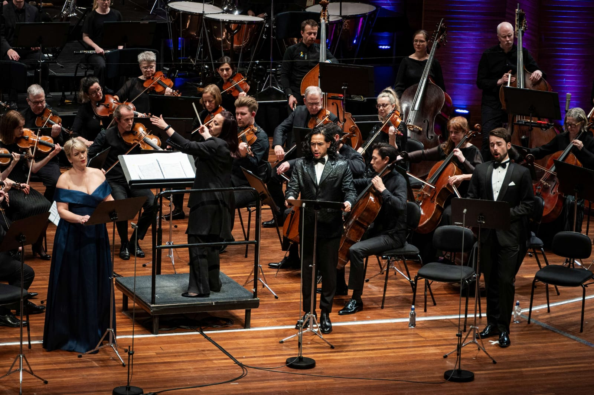
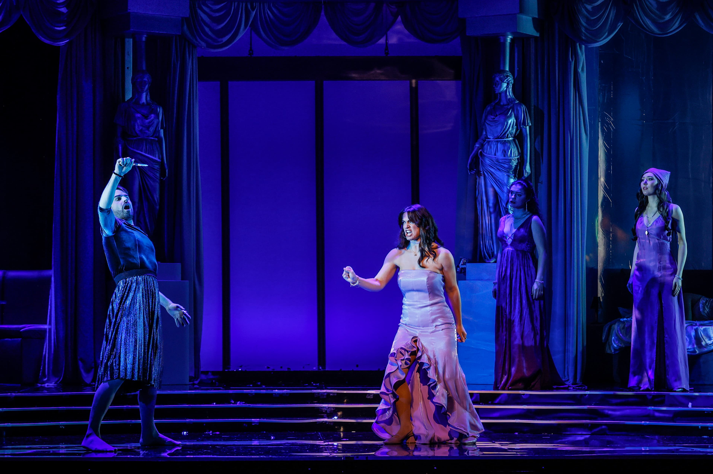
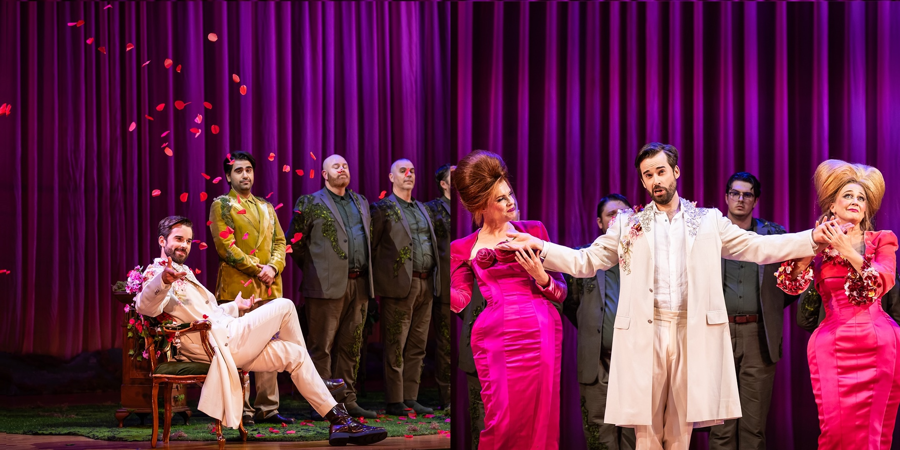
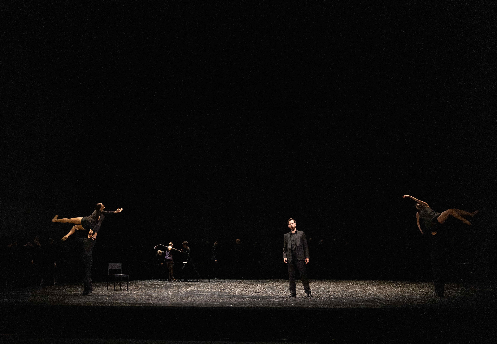

Così fan tutte — Opera Queensland, 2023
“Jeremy Kleeman as Guglielmo complements his golden voice with engaging acting throughout ... his self-congratulation was perfect”
— Nicholas Routley, Australian Stage

Stabat Mater — New Zealand Symphony Orchestra, 2025
“The best of the four soloists was Jeremy Kleeman, billed as a baritone but amply covering the bass range down to the lowest notes with ease and resonance, his aria making a great impact.”
— Simon Holden, bachtrack

Ottone, The Coronation of Poppea — Victorian Opera, 2026
“Increasingly proving to be a powerfully gifted bass-baritone sporting a warm legato, Jeremy Kleeman is an immediate standout as the unfortunate, manipulated Ottone.”
— Paul Selar, Australian Arts Review

Gilgamesh — Opera Australia / Sydney Chamber Opera, 2024
“Kleeman as Gilgamesh dominates the opera, creating a powerful, multi-dimensional character. He possesses a beautifully smooth baritone voice, rich in colour, wide in range, with an expressive and limpid vocal line.”
— Michael Haliwell, Australian Book Review

Dandini, La Cenerentola — Opera Queensland, 2026
"Jeremy Kleeman's Dandini is a triumph. He is outrageously funny, charismatic and precise, with brilliant comic timing and wonderfully clear diction. Vocally, he brings rich tones and impressive volume, while theatrically he has the rare ability to steal focus without damaging the balance of the production."
— Kitty Goodall, Stage Whispers

Bass Soloist, Messa da Requiem — Queensland Ballet, 2026
"Jeremy Kleeman's bass-baritone provides a deep, resonant foundation that anchors the sound."
— Stage Buzz Brisbane

Le nozze di Figaro — State Opera of South Australia, 2023
“Jeremy Kleeman is the perfect Figaro ... he brings youth and physical energy to the role. His baritone is velvety smooth”
— Barry Hill OAM, Stage Whispers

HMS Pinafore — State Opera of South Australia, 2023
“Jeremy Kleeman's wit, energy and constant focus power his performance. He can act, he can move and he can sing.”
— Pat Wilson, Glam Adelaide